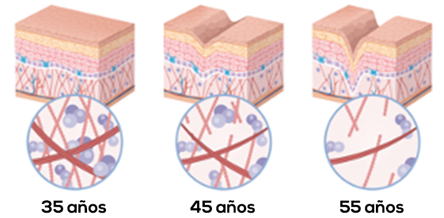
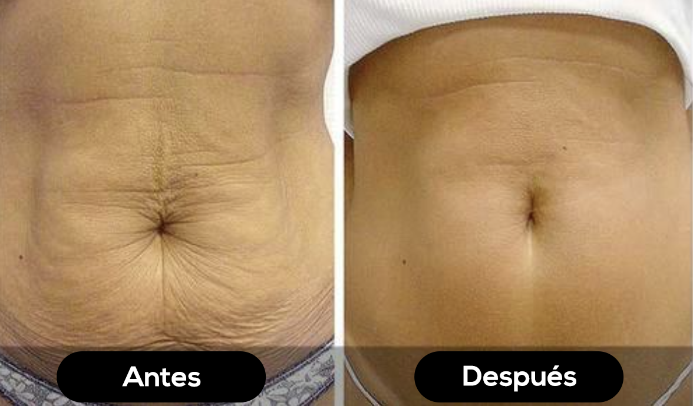
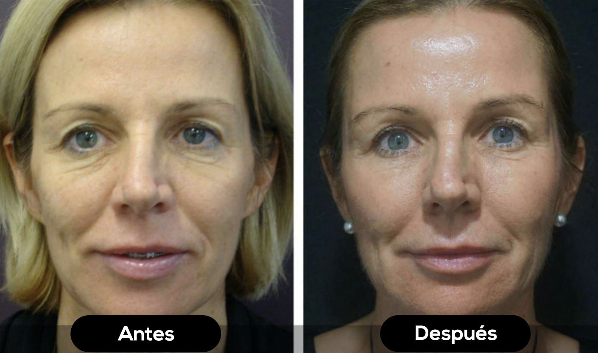
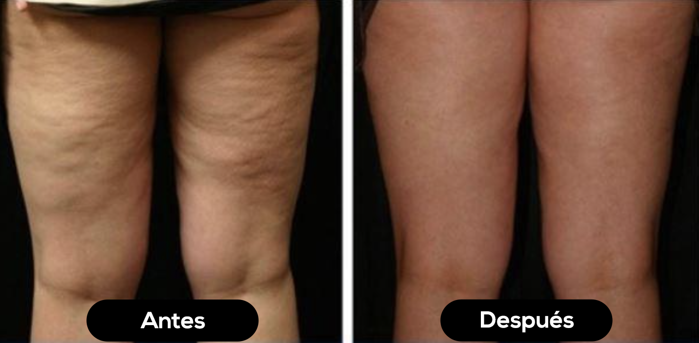
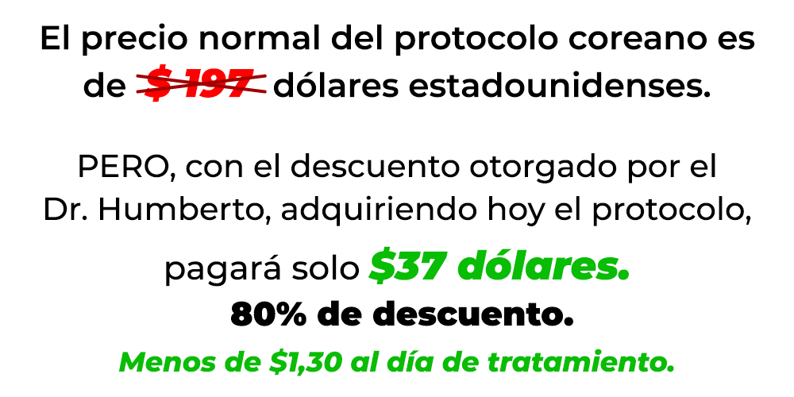

¿64% menos flacidez? Conoce la nueva tecnología desarrollada por un dermatólogo brasileño que ha causado miedo en la industria de la belleza
Mientras estabas distraído por la guerra entre Ucrania y Rusia, un estudio realizado por un médico brasileño demostró científicamente que algo llamado "Protocolo Coreano" puede ser la cura para la flacidez de las mujeres, reduciendo la piel suave hasta en un 64%.
Así que si sientes que tu cuerpo se está volviendo más suave con el tiempo, más flácido, sin la elasticidad y firmeza que tenías hace unos años...
• Si notas que la flacidez dentro del muslo aumenta
(la que te hace sentir avergonzado simplemente PENSANDO en ponerte un bikini o pantalones cortos)...
• Si tienes un poco de pelaje que te "sobra" en el brazo, y se balancea hacia un lado y hacia el otro cada vez que te despides y te hace quedar horrible en las fotos...
O incluso, si tienes una cara abatida, castigada por la gravedad, con los famosos (¡y temerosos!) "patas de gallo" en el rabillo de cada uno de sus ojos, y también el "bigote chino" en la región de su boca ...
Así que este "Protocolo Coreano" puede ser la solución que busques para recuperar la elasticidad y firmeza que tenía tu piel hace unos años, eliminando de una vez por todas la "vergüenza" que sientes de tu cuerpo suave y haciéndote sentir orgullosa una vez más por poder mirarte en el espejo y gustarte de lo que ves.
Si eres una de las mujeres que sufre de alguno de estos tipos de flacidez en el cuerpo, solo tienes 3 opciones para lidiar con este problema:
1. Acepta su cruel destino y vive atrapado dentro de un cuerpo que es más suave que la gelatina;
2. Hace cirugía plástica, radiofrecuencia u otros procedimientos estéticos costosos, invasivos y a veces incluso peligrosos para su salud;
3. O comienzas a mirar con más cariño este "Protocolo Coreano" que, según un estudio científico realizado por un reconocido dermatólogo brasileño y probado en 50 voluntarios, puede reducir la flacidez en los senos y el vientre, y detonar la flacidez en el cuello y los brazos, y eliminar hasta el 64% de la flacidez de la cara.
Descubre hoy en el asunto de El portal por qué este "Protocolo Coreano" funciona tan bien para la piel... y si estás leyendo este artículo hasta también te enseñaremos cómo puedes probar este "Protocolo Coreano", para que puedas recuperar la firmeza y elasticidad que tenías a los 25 años de edad, y lo más importante... Siéntete bella una vez más
"¡Tengo 42 años y la gente pensaba que tenía 60! Después del embarazo, mi barriga se volvió demasiado flácida, nunca me puse un bikini para ir a la playa ... ¡solo aquellos que pasan por esto saben lo que es la autoestima en EL FONDO! Cada vez que me miraba en el espejo, me sentía devastada por las arrugas. ¡Mi brazo era suave, pero muy suave! Cada foto con la familia era una HUMILLACIÓN". – Márcia Reggiani, 42 años, voluntaria brasileña del estudio.
Dermatólogo explica la flacidez
El dermatólogo Humberto Beltrão explica por qué se produce la flacidez y cómo terminarla.Para que entiendas cómo funciona este "Protocolo Coreano", tienes que entender cómo aparece la flacidez en tu cuerpo, y para eso tenemos que hablar de una proteína que quizás ya conozcas, el colágeno.
Después de los 30 años, su cuerpo comienza a producir aproximadamente un 1,5% menos de una proteína esencial para la piel cada año, llamada colágeno. Con cada año que pasa, tu cuerpo produce cada vez menos colágeno, hasta que cuando llegas a los 50, produces solo el 35% de lo que tu cuerpo necesita.
Y es exactamente por eso que se produce la flacidez: porque el colágeno no es más que los "ladrillos" que componen tu piel, y si no tienes estos "ladrillos", tu piel "se desmonta".
Si sacas los ladrillos de una casa, se cae. Y si quitas colágeno de tu piel, también se caerá. Y el resultado de esto ya lo conoces bien: ¡la flacidez dhimsined!
Las "patas de gallo" comienzan a aparecer en el rabillo del ojo, el "bigote chino" en la región de la boca, tu vientre se vuelve suave, tu cara se vuelve suave, tu brazo y piernas son suaves ... bueno, TODO se ablanda si no tienes colágeno en tu cuerpo.
Para resolver esto, sería suficiente agregar este colágeno en su cuerpo de nuevo, ¿verdad?
Así que tu cuerpo tendría los "ladrillos" que necesita para reconstruir su piel y darte más firmeza y elasticidad, dejando su vientre liso y doble, diciendo adiós al "adiós" del brazo, y enviando la flacidez dentro del muslo y las arrugas, ¿no?
En realidad, NO.
Dado que su cuerpo disminuye la capacidad natural de producción de colágeno, no sirve de nada ingerir más y más colágeno. Eso es porque cuando tomamos colágeno en pastillas, polvo o sobre, más del 89% de él es disuelto por el jugo gástrico de nuestro estómago, y el otro casi 10% termina yendo a otros lugares que no son nuestra piel, lugares como cabello, uñas y articulaciones...
La única manera de eliminar permanentemente la flacidez del vientre, los brazos, el cuello y rejuvenecer la piel de la cara, es forzando a su cuerpo a volver a producir colágeno como antes.
Cualquier colágeno que se ingiera externamente NO tendrá ningún beneficio para disminuir o incluso tratar la flacidez de su cuerpo.
El camino del Dr. Humberto hacia la creación del "Protocolo Coreano"
Antes de revelarte qué es el "Protocolo Coreano" y cómo es la única manera de forzar a tu cuerpo a producir colágeno como antes, necesitas entender un poco de la historia que motivó a Humberto a crear el protocolo.
Esta es Gabriela Rosa, de solo 32 años. Modelo/actriz y fallecida esposa de Humberto.Esta foto fue grabada hace dos años, cuando Gabriela entró en depresión aguda después de desarrollar una imagen de envejecimiento prematuro que arruinó su prometedora carrera como actriz y modelo publicitaria en Brasil.
Gabriela siempre ha sido muy bella y carismática. Destacó en la infancia por su alta capacidad de interpretación e ingenio frente a las cámaras.
A la edad de 14 años, comenzó su carrera como modelo infantil y actriz en obras de teatro en la ciudad en la que vivía. A la edad de 23 años, conoció a Humberto en la universidad y pronto se enamoró y se casó.
Cuando Gabriela cumplió 28 años, su carrera comenzó a declinar. La razón: ya parecía tener 40 años
En el mundo del arte, la apariencia importa mucho, y Gabriela comenzó a sufrir rechazos en los papeles de actriz y trabajos publicitarios porque a los directores les gustaría una mujer "más joven".
Lo cual no tenía ningún sentido, porque en las entrevistas, ella solía ser la más joven de todos los candidatos.
En solo 2 años, Gabriela perdió peso y salud, lo que aceleró aún más el proceso de envejecimiento prematuro y flacidez de su piel.
Humberto, incluso como dermatólogo, todavía no tenía los conocimientos necesarios para poder ayudar a Gabriela a tratar la flacidez y el envejecimiento prematuro.
Luego, después de 2 años de depresión aguda y años de envejecimiento acelerado, Gabriela se quitó la vida.
Es triste, pero fue la muerte de su amada Gabriela lo que hizo que Humberto tomara la decisión de dedicar su vida a encontrar en la ciencia la cura para la flacidez y el envejecimiento prematuro. Y de esta manera, ayudar a otras mujeres a luchar contra el envejecimiento y recuperar todos los "años perdidos" y que nunca volverían si no hubiera desarrollado el "Protocolo Coreano de Rejuvenecimiento"
¿Qué es el "Protocolo Coreano"?
Durante los estudios de Humberto, mientras investigaba la genética de las mujeres coreanas, encontró las respuestas necesarias para desentrañar el misterio del envejecimiento.
Después de todo, ¿has notado cómo las mujeres coreanas no parecen envejecer?
Esta es la familia Hau, lo creas o no, hay tres generaciones de familia, hija, madre y abuela ...
¿Puedes decir quién es quién?
Hija (izquierda) tiene 28 años
La madre (centro) tiene 45 años
y la abuela (derecha) tiene 63 años
El gran secreto detrás de la jovialidad coreana radica en su cultura.
A las mujeres coreanas se les ha enseñado desde la infancia a hacer rituales y protocolos diarios que hacen que las células del cuerpo produzcan colágeno en abundancia.
Estos protocolos no son solo para mantener la piel joven para siempre. De hecho, cuando los coreanos comenzaron a practicarlos, el objetivo era equilibrar los chakras.
Las chakras son los estudios y prácticas de la teosofía y la concienciología, que tiene como objetivo mantener el cuerpo y el espíritu por mucho tiempo.
Resulta que los mismos protocolos y ejercicios faciales practicados diariamente por los coreanos hacen que el cuerpo produzca proteína de colágeno en cantidades 10, 15 veces más altas que en cualquier otro grupo étnico en el mundo. Es por eso que las mujeres coreanas nunca parecen envejecer.
Fue entonces cuando Humberto, después de meses de estudios sobre el secreto de la jovialidad coreana, desarrolló el "Protocolo Coreano de Rejuvenecimiento".
Ahora que ya sabes cómo forzar a tu cuerpo a producir colágeno de forma natural y en abundancia. Debes ...
¡Comience a practicar el "Protocolo coreano"
lo antes posible!
La creación de Humberto lo convirtió en uno de los dermatólogos más reconocidos de Brasil.
Solo hay un "pequeño problema": para que el protocolo funcione, debe haberse hecho desde la infancia, porque el proceso de aceleración de la producción de colágeno lleva tiempo y se realiza a largo plazo.
Pero cálmate... ¡Ahora viene la parte buena!
Humberto es dermatólogo y apasionado por la ciencia.
Descubrió que al combinar la cultura coreana con una serie de ingredientes poderosos, podía crear un método que cualquier mujer u hombre podría aplicarse a sí mismo.
El protocolo combina los 14 rituales de belleza coreanos estudiados por Humberto y las técnicas brasileñas que juntas hacen que el cuerpo produzca grandes cantidades de colágeno. Y con eso, obliga a las células que una vez estuvieron espaciadas por la falta de "ladrillos" (colágeno) a unirse y fortalecerse. Eliminando hasta un 64% de flacidez.
La creación de Humberto adquirió proporciones nacionales y llegó a todas las clases sociales.
Siendo utilizado por mujeres comunes y corrientes y en las grandes celebridades brasileñas.
Ahora me imagino que te estás preguntando: ¿Por qué el resto del mundo no conoce la creación de Humberto?
El propio dermatólogo respondió:
"La verdad es que traté de dar a conocer este descubrimiento, pero empecé a sufrir persecución por parte de los organismos reguladores...
Infelizmente eu descobri depois que a indústria bilionária da farmácia não gostou nada da minha descoberta. Afinal, caso minha descoberta chegasse a outros países, eu causaria prejuízos bilionários aos cofres das grandes indústrias.
Pero nada me detendrá, el dolor de perder a mi amada esposa siempre ha sido mi gran combustible".
Fue entonces cuando hace tres meses, Humberto logró ganar en los tribunales y obtuvo el derecho a comercializar el "Protocolo Coreano" en todos los países del MUNDO.
ADVERTENCIA – Si usted está interesado en adquirir el método desarrollado por el Dr. Humberto, por favor lea las siguientes líneas cuidadosamente para obtener más información.
El Protocolo fue creado por el Dr. Humberto, ¡necesita ser ejecutado por solo 10 minutos al día!
Si ejecuta el protocolo utilizando solo 10 minutos de su día, puede rejuvenecer hasta 12 años en solo 6 semanas.
Vea a continuación los resultados obtenidos por la persona que aplicó el protocolo.
 Flacidez en el vientre de Joana Petry, de 42 años. 63% de reducción de la flacidez abdominal en 2 meses."Por mucho que no creyera en la promesa milagrosa del protocolo, preferí arriesgarme y después de 2 meses ... ¡Me sorprendieron demasiado los resultados! Después del nacimiento de mi tercer hijo, la piel de mi vientre se volvió muy flácida, desarrollé diasis ... y el protocolo lo solucionó todo", comenta Joana.
"Después de 5 meses, logré deshacerme de la "pata de pollo" y el bigote chino, lo que me hizo muy indigente. Las estrías y la celulitis también se suavizaron, la flacidez dentro del muslo disminuyó los horrores, y ahora puedo volver a usar pantalones cortos, antes de que estuviera demasiado avergonzado de mi cuerpo. Este Protocolo coreano no es una fuente de juventud, no existe tal cosa como... pero gané unos 10 años menos y una piel más firme, ¡eso SÍ!" - dice Joana, riendo.
 Su rostro después de 8 semanas y 3 días aplicando el protocolo. 49% de reducción en "pie de pollo"  Joana se sintió humillada por su muslo caído en el interior, y no llevaba pantalones cortos ni vestidos, incluso en el calor. Resultado después de 2 meses y 13 días con el Protocolo Coreano, con una increíble reducción del 43% en la flacidez del muslo en el interior.Suena como un milagro, ¿no?
Pero lo creas o no, esto es lo que sucede cuando le das a tu cuerpo los "ladrillos" que necesita para reconstruir tu piel, los mismos "ladrillos" que tenías en abundancia a la edad de 20 años.
ADVERTENCIA - NO compre el protocolo coreano antes de leer esto:
Le pedimos al Dr. Humberto una garantía especial para nuestros lectores, y nos ofreció una GARANTÍA BLINDADA y un PRECIO ESPECIAL. pero solo para aquellos que aprovechen la oportunidad hasta el Si está leyendo después de este día, ignore esta oferta.
Todos los lectores de nuestro blog tendrán hoy un 80% de descuento sobre el precio del "Protocolo Coreano"
Este descuento nunca se ha aplicado antes. Es una oportunidad ÚNICA para nuestros lectores.
Precio especial termina en:
Echa un vistazo a la Garantía blindada del protocolo coreano a continuación:
"Usted, lector del blog El Portal, tiene derecho a probar nuestro protocolo durante 60 días. Simplemente dé su voto de confianza y vea el poder de este método en su cuerpo. Si en treinta días, usted ...
• No elimines hasta el 56% de la flacidez de tu vida...
• No reducir hasta en un 53% la celulitis que te hace sentir avergonzado...
• No desterres la "pata de pollo" y el "bigote chino" de tu cara...
• No pongas fin a la flacidez en tu vientre, brazos, cara...
• No suavizes las arrugas que te impiden mirarte al espejo y sentirte orgulloso de lo que ves...
• O si no te gusta nada
Entonces póngase en contacto con nosotros por correo electrónico
contacto@protocoloderejuvenecimiento.com le reembolsará el 100% del importe pagado.
¿Cuánto cuesta el Protocolo Coreano?
ADVERTENCIA - El acceso al Protocolo coreano se realiza en línea. Después del pago, recibirá en su correo electrónico el nombre de usuario y la contraseña para acceder al protocolo y comenzar su tratamiento hoy.

¡Vea los bonos especiales!
01. Acceso al área de miembros
02. E-BOOK - LIBRO ELECTRONICO.
FIN DE LA CAÍDA DEL CABELLO
03. E-BOOK • LIBRO ELECTRONICO
METODO PARA BAJAR DE PESO EN 60 DIAS
Y Estos Son Los Términos De Su 100%
De Devolución De Dinero, Garantía De 60 Días
Lee y prueba el producto durante 60 largos días... y solo entonces decide.
Si no sientes una diferencia en la tersura de tu piel...
Si no siente que sus arrugas profundas se suavizan y las lineas suaves se desvanecen...
Y que tu cuello de tortuga por fin se está poniendo apretado...
O si simplemente no te gusta cómo está organizado el contenido.
No importa el motivo.
Simplemente envíe un correo electrónico Y te devolvemos el 100% de tu dinero. Sin preguntas.
Los reembolso se emitirán dentro de las 24 horas y el dinero volverá a su cuenta dentro de los cinco días hábiles.
SOLO HOY $37,00. ¡HAGA CLIC AQUÍ!
Solo puedo ofrecer esto ahora y solo ahora, ya que no
puedo seguir regalando todo el Curso de PROTOCOLO COREANO
REJUVENECEDOR para siempre a una tarifa tan reducida,
o no podría pagar los costos asociados con mantener este
producto y sitio web arriba.
Echa un vistazo a lo que dicen sobre PROTOCOLO COREANO
REJUVENECEDOR
Esto te puede pasar una vez en la vida!!!
¡AHORA TIENES UN 80% DE DESCUENTO!
SOLO HOY $37,00. ¡HAGA CLIC AQUÍ!
El pedido es seguro y confidencial.
 |
|
| ¿Alguien ha probado si realmente funciona? | |
| Chicos, ¡realmente me gusta! ¡Es muy práctico! ¡Mi celulitis y mis patas de gallo se han ido y no han pasado ni 30 días desde que comencé! ¡Estoy enamorado! | |
| Que increíble 😱 Había ido al médico, pero llegué a casa triste porque cada sesión para quitarme las arrugas cuesta $300 y necesito 10 sesiones, este Protocolo Coreano Rejuvenecedor cayó como una bendición en mi vida… | |
| ¡Gente, este Protocolo es realmente muy bueno! He probado tantas cosas para mis arrugas y flacidez que ahora sin salir de casa veo un resultado que nunca antes había visto | |
| Después que tuve a mi hija, fui muy descuidada, subí de peso y veo que a mi esposo no le importa tanto, pero ahora estoy empezando a tener vanidad, ya tengo mi acceso y voy a empezar hoy. ! | |
 |
|
| Llevo 1 semana aplicándolo y ya estoy notando mi cambio kk, estoy muy contenta 😍😍😍 | |